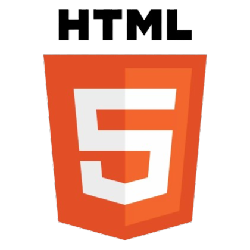
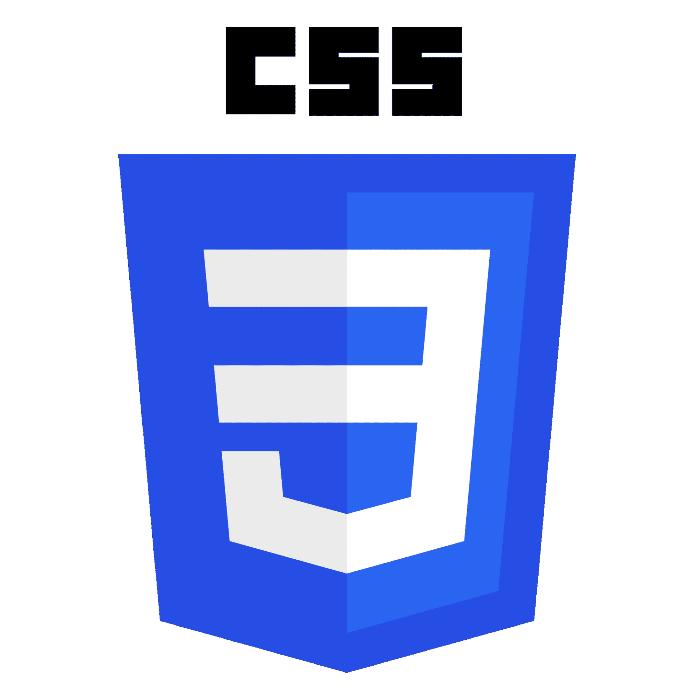
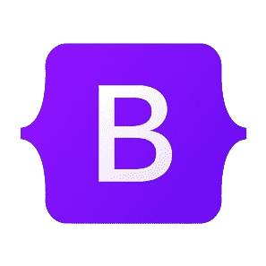
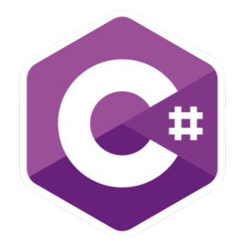
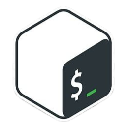
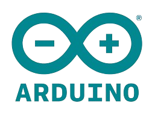
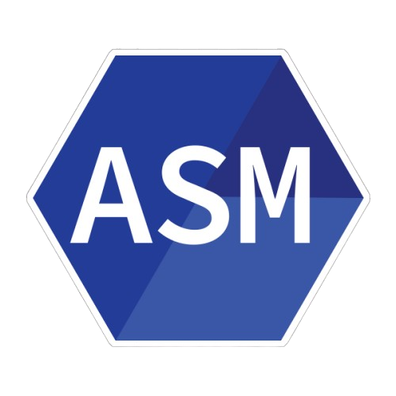

Linguaggi
Ho raccolto tutti i linguaggi di programmazione che conosco,
all'interno di questo spazio del mio sito!

HTML
Livello Competenze:
INTERMEDIO
Linguaggio di Formattazione fondamentale per la creazione di siti come questo,
che accompagna lo studio di CSS e JavaScript, implementando anche il Bootstrap al suo interno.
Ho imparato come si costruisce e struttura un sito.

CSS
Livello Competenze:
INTERMEDIO
Linguaggio di stile fondamentale per migliorare l'esperienza visiva dell'utente.
Ho appreso come si gestiscono le principali funzioni grafiche che abbelliscono gli elementi di un
sito.

Javascript
Livello Competenze:
IN PERFEZIONAMENTO
Linguaggio di programmazione che permette di gestire gli elementi della pagina HTML,
fondamentale per dare dinamicità al sito e per la quantità di possibilità che offre.

Bootstrap
Livello Competenze:
BASE
Framework CSS Responsive che permette di integrare proprietà stilistiche, tipiche del CSS,
direttamente nel codice HTML.
Ho imparato meglio l'uso di questo strumento implementandolo alla struttura di questo sito.

C #
Livello Competenze:
INTERMEDIO
Linguaggio di programmazione tra i più diffusi e versatili.
Ho approfondito la gestione di variabili globali, parametrizzazione e algoritmi di ricerca,
unendo la logica di programmazione alla gestione di file e interfacce visuali.
C
Livello Competenze:
IN PERFEZIONAMENTO
Linguaggio di programmazione incentrato sull'efficienza e il controllo dell'hardware.
Ho appreso concetti avanzati come la gestione dei puntatori,
l'allocazione di memoria tramite indirizzi e la creazione di strutture dati complesse.

Bash
Livello Competenze:
BASE
Linguaggio di scripting utilizzato per interagire con il file system e gestire l'ambiente desktop
via terminale.
Mi ha portato su un'ottima base logica, per l'introduzione alla programmazione in linguaggio C.

Arduino
Livello Competenze:
PRIMI APPROCCI
Molte esperienze in laboratorio che riguardano la creazione di circuiti tra breadboard
e programmazione con software Arduino, con la materia Telecomunicazioni.

Assembler
Livello Competenze:
PRIMI APPROCCI
Introduzione degli elaboratori attraverso lo studio delle istruzioni principali
tramite la materia Sistemi e Reti - Teoria e gestione diretta dei registri.